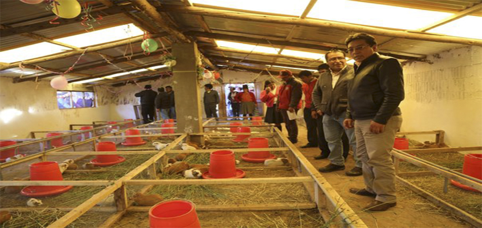
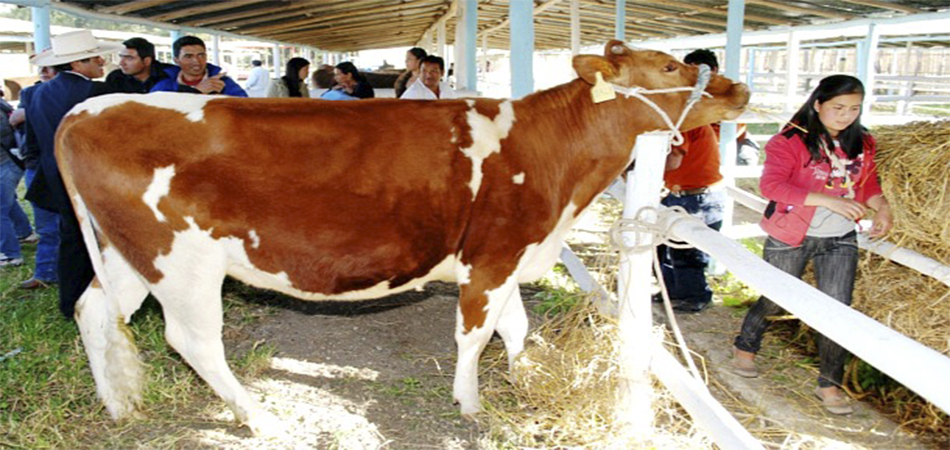
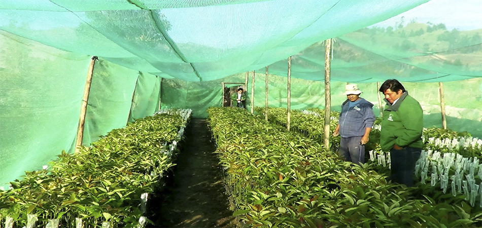

Cajabamba
La Provincia de Cajabamba es una de las trece que conforman el Departamento de Cajamarca, bajo la administación del Gobierno Regional de Cajamarca, en el Perú. Limita al norte con la provincia de San Marcos, al este y al sur con la Región La Libertad y al oeste con la provincia de Cajamarca.
Nuetra Industria
Cajabamba se comercializan semanalmente 22,000 unidades de carne de cuy que es vendida en mercados de la costa como Trujillo, Lima, Chimbote.
Nuetra Ganadería
Cajamarca, departamento de la Sierra Norte del País, cuenta con una diversidad ecológica que ha permitido que en toda su extensión se instalen centros de cría de ganado lechero de razas Holstein y Brown Swiss en los valles, y cruces de éstas en las zonas más altas.
Nuestro Agro
En en valle de Cajabamba se viene ejecutando un proyecto que consiste en incrementar los rendimientos de procucción del mango, palta chirimoya y vid. Los beneficiados, obviamemente, todos los agricultores que se dedican a cultivar dichas frutas en zonas como Nuñumabamba y El Chirimoyo
